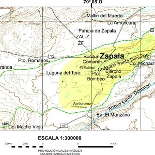

Acuífero
Descripción
El acuífero freático que abastece a Zapala es la fuente principal de agua potable de la ciudad; es un sistema somero ligado a humedales y manantiales, vulnerable a variaciones del nivel freático y a la sobreexplotación en un clima semiárido (precipitaciones < 200 mm/año).
Mapa y ubicación

Monitoreo y datos
Proyectos y acciones
Descripción breve de proyectos en curso relacionados con la gestión del acuífero.